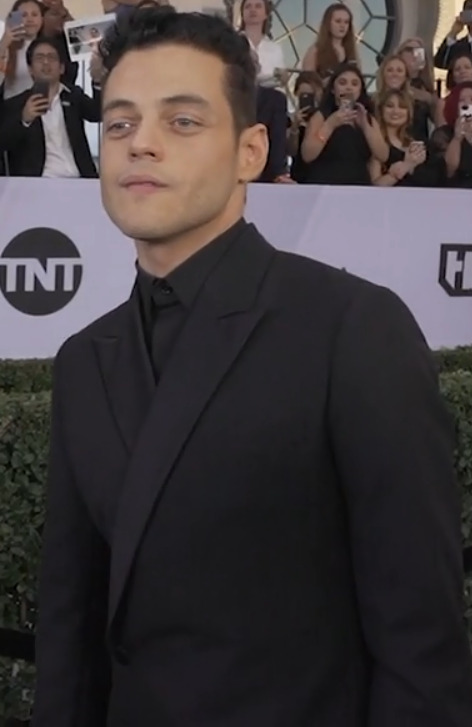
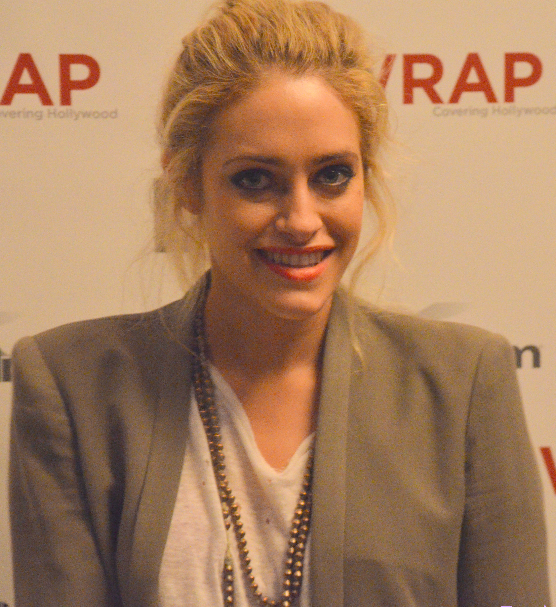
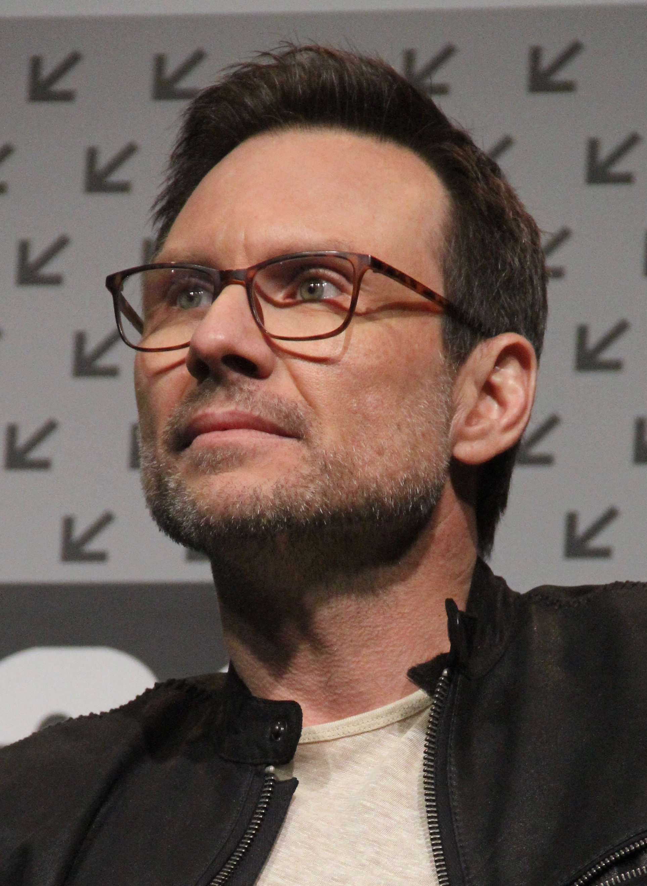
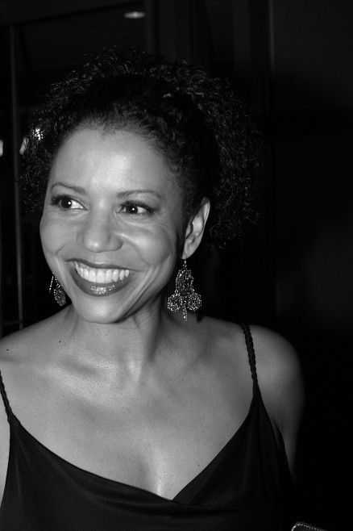

<!DOCTYPE html>
<html lang="it">
<head>
    <meta charset="UTF-8">
    <meta http-equiv="X-UA-Compatible" content="IE=edge">
    <meta name="viewport" content="width=device-width, initial-scale=1.0">
    <link rel="stylesheet" href="../css/style.css">
    <link rel="stylesheet" href="../css/font.css">
    <link rel="icon" type="image/x-icon" href="../img/MrRobot-Icon.ico">
    <title>MrRobot</title>
</head>
<body>
    
    <aside>
        <div class="subtitle" id="Personaggi-Principali">Personaggi principali</div>
        <hr>
            
            
            
            
            
        <ul>
            <li>Elliot Alderson (stagioni 1-4), interpretato da Rami Malek, doppiato da Flavio Aquilone.<br>
                Ingegnere che si occupa di sicurezza informatica presso la Allsafe, nei panni di hacker-vigilante afflitto da disturbo di ansia sociale, depressione, disturbo dissociativo dell'identità, e allucinazioni visive e uditive, alle quali si rivolge spesso, cosi come allo spettatore, come interlocutore durante dialoghi introspettivi. Si presenta come un ragazzo depresso e sociofobico, che fa uso di morfina. Di giorno, Elliot passa le proprie giornate al lavoro, sforzandosi di apparire, per quanto gli è possibile, come un normale membro della cosiddetta "società civile" e proteggendo gli interessi delle multinazionali, in particolare la Evil Corp. Nel suo tempo libero invece, Elliot opera come un giustiziere informatico, hackerando non solo individui esterni alla sua ristretta cerchia sociale, ma anche i propri conoscenti e amici, conservando poi le informazioni in CD, come fossero dei trofei. Un giorno, mentre è in metropolitana, incontra un misterioso personaggio, intento ad avvicinare il ragazzo ad un movimento di hacktivisti conosciuto con il nome di "Fsociety". Il gruppo è formato, oltre che ovviamente dall'uomo, da Darlene, Romero, Mobley e Shama, conosciuta anche come Trenton. L'obiettivo della Fsociety è distruggere la Evil Corp., multinazionale accusata dell'insabbiamento di rifiuti tossici che ha causato la morte per leucemia di numerosissime persone, oltre che del padre di Elliot.</li>
            <li>Darlene Alderson (stagioni 1-4), interpretata da Carly Chaikin e doppiata da Alessia Amendola.<br>
                Una degli hacker della Fsociety.</li>
            <li>Angela Moss (stagioni 1-4), interpretata da Portia Doubleday, doppiata da Elena Perino.<br>
                Amica d'infanzia di Elliot e sua collega alla Allsafe.</li>
            <li>Tyrell Wellick (stagioni 1-4), interpretato da Martin Wallström, doppiato da Stefano Crescentini.<br>
                Vice-CTO senza scrupoli della Evil Corp, intenzionato a sfruttare la dote di Elliot a suo vantaggio.</li>
            <li>Mr. Robot (stagioni 1-4), interpretato da Christian Slater, doppiato da Christian Iansante.<br>
                Leader del gruppo di hacker Fsociety che intende reclutare a tutti i costi Elliot.</li>
            <li>Phillip Price (stagioni 2-4, ricorrente stagione 1), interpretato da Michael Cristofer, doppiato da Pierluigi Astore.<br>
                Cinico e spietato amministratore delegato della Evil Corp.</li>
            <li>Krista Gordon (stagioni 1-4), interpretata da Gloria Reuben, doppiata da Barbara Castracane.<br>
                Psicanalista di Elliot.</li>
            <li>Joanna Wellick (stagioni 2-3, ricorrente stagione 1), interpretata da Stephanie Corneliussen, doppiata da Chiara Gioncardi.<br>
                Moglie e consigliera senza scrupoli di Tyrell per la scalata al potere della Evil Corp.</li>
            <li>Dominique "Dom" DiPierro (stagioni 2-4), interpretata da Grace Gummer, doppiata da Domitilla D'Amico.<br>
                Agente dell'FBI che indaga sull'attacco hacker della Evil Corp.</li>
            <li>Whiterose/Zhi Zhang (stagioni 3-4, ricorrente stagioni 1-2), interpretata da BD Wong, doppiata da Marco Guadagno.<br>
                Enigmatica leader del gruppo hacker Dark Army e ministro della sicurezza cinese. È la principale antagonista della serie.</li>
            <li>Irving (stagione 3, guest star stagione 4), interpretato da Bobby Cannavale, doppiato da Massimo Lodolo.<br>
                Venditore di auto usate.</li>
            <li>Fernando Vera (stagione 4, ricorrente stagione 1, guest star stagione 3), interpretato da Elliot Villar, doppiato da Davide Lepore.<br>
                Spacciatore di droga e farmaci anti-astinenza per Elliot. Ha una visione distorta della realtà ed è ossessionato da Shayla.</li>
            <li>Janice (stagione 4), interpretata da Ashlie Atkinson, doppiata da Valentina Mari.<br>
                Tassidermista loquace, con un peculiare sense of humor.</li>
        </ul>
        <a href="../"><div id="back">Torna indietro</div></a>
    </aside>
</body>
</html>